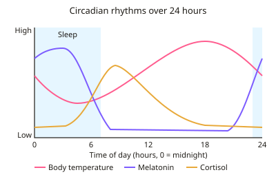

A-level Psychology Year 12 · Topic 11
Biopsychology: biological rhythms, genes and evolution
This topic looks at the body's natural rhythms, and at how genes and evolution shape behaviour.
We will cover circadian, infradian and ultradian rhythms, the body clock and the time cues that reset it, and what goes wrong with jet lag and shift work.
Then we study genes and twin studies, natural selection, and how serotonin, dopamine, testosterone and oxytocin affect behaviour.
- 9 subtopics
- 263 questions
- Free: 11.1 notes and 10 questions
In this topic
- 11.1Circadian rhythms and the sleep-wake cycleFree below · 28 questions
- 11.2Infradian and ultradian rhythms: the menstrual cycle, SAD and sleep stagesOpen in Full Marks · 34 questions
- 11.3Endogenous pacemakers and exogenous zeitgebers: jet lag and shift workOpen in Full Marks · 27 questions
- 11.4Genes and behaviour: genotype, phenotype, twin and family studiesOpen in Full Marks · 29 questions
- 11.5Evolutionary explanations of behaviour: natural selectionOpen in Full Marks · 30 questions
- 11.6Neurotransmitters and hormones in behaviour: serotonin, dopamine, testosterone and oxytocinOpen in Full Marks · 35 questions
- 11.7Brendgen et al. (2005) Genetic and environmental effects on social and physical aggressionOpen in Full Marks · 26 questions
- 11.8Raine, Buchsbaum and LaCasse (1997) Brain abnormalities in murderersOpen in Full Marks · 25 questions
- 11.9Aggression: brain structures, hormones, evolution and Freud's psychodynamic explanationOpen in Full Marks · 29 questions
11.1 · Free notes
Circadian rhythms and the sleep-wake cycle

Key points
- Circadian rhythms (circa = about, dian = day) are biological rhythms lasting about 24 hours. They are controlled by internal endogenous pacemakers and adjusted by external exogenous zeitgebers.
- The sleep-wake cycle is the key AQA example. Darkness raises melatonin from the pineal gland, which makes us sleepy, and light suppresses it.
- Hormone release is also circadian. Melatonin peaks during the night and cortisol peaks shortly after waking, around 08:00-09:00, to prepare the body for the day.
- Core body temperature is circadian. It is lowest at about 04:30 and highest in the early evening, around 18:00. Sleep begins as temperature falls, and alertness and performance follow the temperature rhythm.
- A free-running rhythm continues when all time cues (clocks, daylight) are removed. This shows the rhythm is partly endogenous and not just a response to the environment.
- Siffre lived for months in caves (Alps 1962, Texas 1972) with no clocks or daylight. His free-running sleep-wake cycle settled at about 25 hours, though it varied at first.
- Aschoff and Wever (1976) kept participants in a WWII bunker. Most settled at 24-25 hours, while a few drifted as long as 29 hours.
- Folkard et al. (1985): 12 people lived in a cave for 3 weeks while the clock was secretly sped up to a 22-hour 'day'. Most could not adapt, supporting a strong internal rhythm of about 24 hours.
- Czeisler et al. (1999) used tightly controlled dim light and found an average free-running period of about 24 hours 11 minutes. Siffre's longer estimate may reflect his use of artificial light, which acted as a zeitgeber.
- Evaluation: samples are very small (Siffre was a single case), so there are individual differences and weak generalisability. Strengths are objective measures and real-world applications, such as chronotherapeutics (timing drugs) and managing shift work.
In more detail
- Worked free-running rhythm: if someone's rhythm runs at 25 hours, after 4 days without time cues they would be waking about 4 hours later than when they started.
- Siffre at 60: when Siffre repeated his cave study in 1999, aged 60, his body clock ran much more slowly, sometimes close to 48 hours, suggesting age affects rhythms.
- Chronotherapeutics: some medicines work better at certain times of day, so knowing circadian rhythms can help doctors time treatments.
- Exam tip: for any circadian question, give an example (sleep–wake cycle or body temperature) and name both the endogenous pacemaker (SCN) and the exogenous zeitgeber (light).
Practice
Circadian rhythms and the sleep-wake cycle: 10 questions
Pick an answer to check it, or open the answer for the explanation.
1. Which best defines a circadian rhythm?
- A cycle controlled only by external light
- A cycle longer than 24 hours, such as a monthly cycle
- A cycle shorter than 24 hours, repeated several times a day
- A cycle of about 24 hours, such as the sleep-wake cycle
Show answer
D: A cycle of about 24 hours, such as the sleep-wake cycle. Circadian (circa = about, dian = day) rhythms last roughly 24 hours. Shorter rhythms are ultradian and longer ones infradian. They are driven by internal clocks as well as light.
2. Siffre lived in a cave with no clocks or daylight and his sleep-wake cycle settled at about 25 hours. What is this type of rhythm called?
- Free-running
- Entrained
- Infradian
- Ultradian
Show answer
A: Free-running. A free-running rhythm persists without external cues. Siffre's roughly 25-hour cycle shows an internal clock that continues without zeitgebers.
3. A volunteer lives in a windowless room with no clocks for 3 weeks. Her sleep-wake cycle averages 24.5 hours. What does this suggest?
- Sleep-wake cycles are ultradian rhythms
- An internal body clock runs near 24 hours without time cues
- Exogenous zeitgebers alone control sleep
- Body clocks are exactly 24 hours in all people
Show answer
B: An internal body clock runs near 24 hours without time cues. The rhythm continued at close to 24 hours without cues, so it must be generated internally (endogenously). It was not exactly 24 hours, so the first option is wrong.
4. A person has a free-running cycle of 25 hours and is kept without time cues. By how much will their sleep onset drift later in clock time over 8 days?
- 25 hours
- 12 hours
- 8 hours
- 1 hour
Show answer
C: 8 hours. Each 'day' is 1 hour longer than 24 hours, so after 8 cycles sleep onset has drifted 8 × 1 = 8 hours later.
5. Core body temperature is normally lowest at about which time of day?
- 21:00
- 18:00
- 12:00
- 04:30
Show answer
D: 04:30. Core temperature reaches its minimum at about 04:30 and peaks in the early evening, around 18:00. This is why alertness is poorest in the early hours.
6. Which hormone is released by the pineal gland mainly in darkness and promotes sleepiness?
- Cortisol
- Melatonin
- Oestrogen
- Adrenaline
Show answer
B: Melatonin. The pineal gland secretes melatonin when light levels fall. Cortisol is an alertness-related hormone from the adrenal glands that peaks in the morning.
7. Which statement about cortisol and the circadian rhythm is correct?
- It is lowest in the early morning
- It is released by the pineal gland in darkness
- It peaks around midnight to help induce sleep
- It peaks shortly after waking, preparing the body for the day
Show answer
D: It peaks shortly after waking, preparing the body for the day. Cortisol follows a circadian pattern, peaking in the early morning around waking. Melatonin, not cortisol, is the pineal hormone released in darkness.
8. Which is a methodological criticism of Siffre's cave studies?
- He lived in natural daylight for most of the study
- He used artificial light, which may have acted as a zeitgeber
- The study measured only self-reported mood
- The sample was too large to analyse in depth
Show answer
B: He used artificial light, which may have acted as a zeitgeber. Siffre used lamps when awake, so light could have reset his clock and affected the 25-hour estimate. He was a single case with no natural daylight.
9. In Folkard et al. (1985), the cave clock was secretly sped up so a 'day' lasted 22 hours. What did most participants show?
- They stopped sleeping at regular times
- Their cycle lengthened to about 28 hours
- They adapted fully within three days
- They could not adjust their sleep-wake cycle to a 22-hour day
Show answer
D: They could not adjust their sleep-wake cycle to a 22-hour day. Most participants could not entrain to a 22-hour day, suggesting a strong internal rhythm of about 24 hours that is hard to override.
10. A nurse on her first night shift feels very sleepy at 04:00. What is the best circadian explanation?
- Her sleep-wake cycle is an ultradian rhythm
- Cortisol peaks at 04:00 and keeps her awake
- Core body temperature and alertness are at their lowest then
- Her SCN stops working during night shifts
Show answer
C: Core body temperature and alertness are at their lowest then. At about 04:30 core temperature and alertness are at their daily minimum, so she feels sleepy. The rhythm is circadian and the SCN keeps working.
Keep going in Full Marks
Full Marks has 28 questions on Circadian rhythms and the sleep-wake cycle (18 more than here), set out in practice levels. You also get notes and 3D models for all 9 subtopics of Biopsychology: biological rhythms, genes and evolution, plus games, timed exams and past papers.
On your exam board
Not in the OCR and Cambridge specifications.